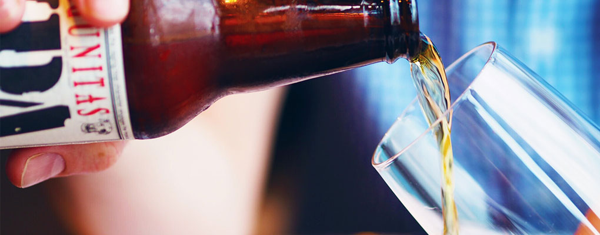

Hero Image
Product 1
Jasne Pelne
Oprócz słodu, chmielu i wody, najważniejszy składnik Tyskiego stanowią od zawsze… piwowarzy. Pokolenia browarników z Tyskich Browarów Książęcych dbają o najlepszy smak „Złota z Tych” już nieprzerwanie od 400-tu lat. Jako wzorcowy polski lager Tyskie ma zawsze pianę „na dwa palce”, złocistą barwę i idealnie wyważony smak między słodyczą a goryczą.
Product 2
Palone
Tyskie Palone opiera się na hicie z lat 70. – lekkim ciemnym piwie Kuracyjnym warzonym na Śląsku. Jego recepturę charakteryzuje kompozycja słodów jęczmiennych: palonego, karmelowego, monachijskiego oraz jasnego. Palone to lekki ciemny lager z nutami kawowymi i karmelowymi.
Product 3
Pilzne
Tyskie Pilzne to ukłon w kierunku lagerów pilzneńskich warzonych w Tychach w latach 20. ubiegłego wieku. Do jego uwarzenia zastosowano dawną metodę zacierania: dekokcję. Pilzne cechuje wyraźna goryczka oraz klarowna, złocista barwa.